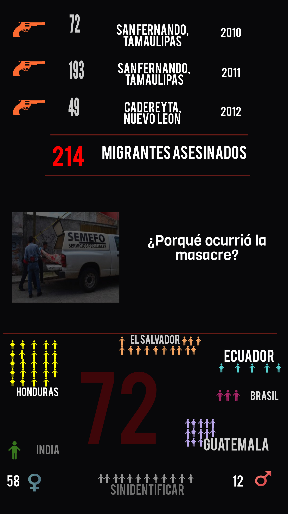
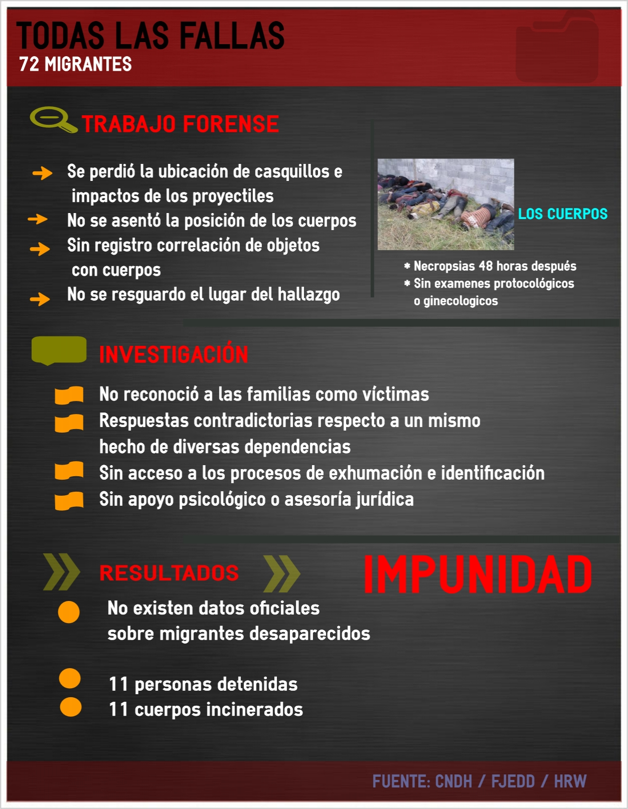

{% extends "_fosas_base.html" %}

{% block content %}
<div class="container">
  <div class="row">
    <div class="col-md-10 col-md-offset-1">
      <h1>Mapa de fosas</h1>

      <div class="row">
        <div class="col-md-5">
        {{ read_file("_docs/mapa.md")|markdown }}
        </div>
        <div class="col-md-7">
          
        </div>

      </div>

      <div id="map" style="width: 100%; height: 500px;"></div>
    </div>
  </div>
  <div class="row">
    <div class="col-md-10 col-md-offset-1">
      <h1>Infografías</h1>
      <hr />
      
      <hr />
      
    </div>
  </div>
</div>
{% endblock %}

{% block css %}
{{ super() }}
<link rel="stylesheet" type="text/css" href="//cdnjs.cloudflare.com/ajax/libs/leaflet/0.7.2/leaflet.css" />
{% endblock %}

{% block scripts %}
<script type="text/template" id="popup-template">
  <h2><%= localizacion %></h2>
  <p>Fosas: <%= fosas %></p>
  <p>Cuerpos: <%= cuerpos %></p>
  <p>Año: <%= anio %></p>
</script>
<script src="//cdnjs.cloudflare.com/ajax/libs/underscore.js/1.6.0/underscore-min.js"></script>
<script src="//cdnjs.cloudflare.com/ajax/libs/leaflet/0.7.2/leaflet.js" type="text/javascript"></script>
<script type="text/javascript" src="http://maps.stamen.com/js/tile.stamen.js?v1.2.4"></script>
<script>
$(document).ready(function() {
  var template = _.template($("#popup-template").html());

  var map = L.map('map', {
      center: [21.651685, -99.820863],
      zoom: 5
  });
  var base = new L.StamenTileLayer("toner-lite");
  map.addLayer(base);

  {% for location in fosas_locations %}
    var marker = L.marker([{{ location.lat }}, {{ location.lon }}]).addTo(map);
    var content = template({
      localizacion: "{{ location.localizacion }}",
      fosas: {{ location.fosas or 0 }},
      cuerpos: {{ location.cuerpos or 0 }},
      anio: {{ location.anio or 0 }},
    });
    marker.bindPopup(content);
  {% endfor %}
});

</script>
{% endblock %}
